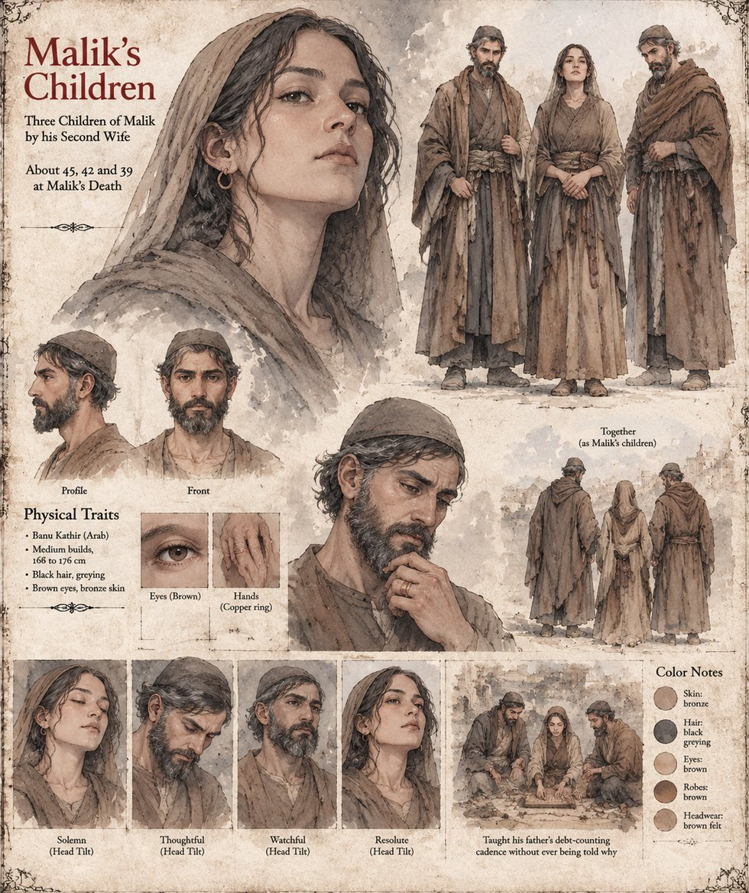

Malik's Children
Three children of Malik ibn Sabir by his second wife · unnamed · taught their father's debt-counting cadence without being told why · about forty-five, forty-two and thirty-nine at his death by the sheet
The three children Malik has with his second wife. He teaches them to speak in the debt-counting cadence of his own father, the one he once muttered verse in to his goats, and never tells them why. They are grown, with children of their own, by the time he is an old man. The manuscript gives them neither names nor description.
The sheet draws two bearded sons and a daughter, of medium build, black hair going grey, brown eyes and bronze skin, with long, mild faces after their father, in plain brown robes and small felt caps, the daughter in a headcloth, each with a small copper ring; all three tilt the head when counting. Its expression panels run solemn, thoughtful, watchful and resolute, all with the head tilt, and a scene shows the three together, captioned taught his father's debt-counting cadence without ever being told why. The ages (about forty-five, forty-two and thirty-nine at Malik's death), the sexes, the rings and everything visual are the sheet's.